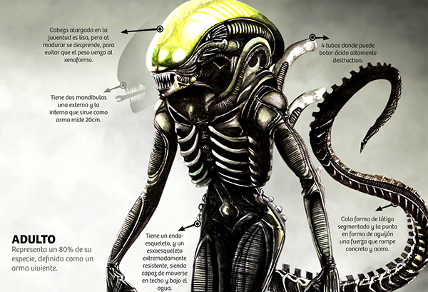

Alien-Xenomorph
PROFILE | |
|---|---|
|  | |
| Characteristics | |
| Name | Xenomorph |
| Age | Undetermined (Xenomorphs are alien creatures without a specific known age) |
| Height | Approximately 7'5" (May vary depending on the host) |
| Weight | Approximately 180 kg (variable depending on the host) |
| Variations | Tarkatan, Summoner, Acidic |
| Fighting Style | Mixed (Combines several brutal styles and unique alien attacks) |
| Species | Xenomorph XX121 |
| Weapons | Tarkatan Blades, Inner Mandible, Acid Blood, and Spiked Tail |
| Main Opponent | Predator |
| Country/Origin Location | Moon: Acheron (LV-426) |
Origin of the Xenomorph
Xenomorphs are one of the most iconic creatures in science fiction and horror, primarily known for their presence in the *Alien* franchise films, created by Ridley Scott. The origin of the Xenomorphs and their history are closely tied to the universe of this franchise, with the first appearance of the creature in the film *Alien – The Eighth Passenger* (1979).First Appearance and Evolution
The first appearance of the Xenomorph on the big screen was in *Alien – The Eighth Passenger* (1979), where the crew of a spaceship discovers an emergency signal coming from an unknown planet. After exploring the planet, they find the eggs of the Xenomorphs and accidentally release one of the creatures, which begins to hunt and kill the crew. The success of *Alien* led to sequels and the development of an expanded universe, where the mythology of the Xenomorphs and their interaction with humans became more complex. In *Aliens – The Rescue* (1986), for example, the focus shifts to a more militarized environment, with a group of space marines trying to fight off a colony infested with Xenomorphs. The franchise also includes several spin-off films, such as *Alien 3* (1992), *Alien: Resurrection* (1997), and the films *Prometheus* (2012) and *Alien: Covenant* (2017), which explore the origins of the Xenomorphs and their relationship with other entities, such as the "Engineers" (an alien race responsible for creating various species).Main Attacks
Acid Spit:
Fires a jet of corrosive acid that causes continuous damage over time.Blood Tongue:
A quick strike where the Xenomorph launches its acidic tongue forward.Alien Egg:
Summons eggs that can release a Facehugger to attack enemies.Crawler:
Summons a crawling creature that chases and attacks the opponent.Blade Fury:
A quick attack with blades, repeatedly cutting the enemy.Slice Slice:
A continuous attack where the Xenomorph uses its blades to quickly slice the opponent into pieces.Tail Whip:
A powerful attack using the Xenomorph's tail to strike the opponent.Tail Spin:
A spinning attack using the tail to hit multiple times.Main Strength
Being a fusion of the classic Xenomorph from the *Alien* franchise with elements from the *Mortal Kombat* universe. The Xenomorph possesses abilities that make it an aggressive and dangerous fighter, excelling in strength, speed, and range. Its main strengths include:Variety of Styles (Variations).
Pressure and Range: The Xenomorph is excellent at keeping pressure on the opponent. It combines fast and long-range attacks with the ability to quickly close the distance using its agile movements.
High Combo Damage: Its variations allow for long combos that can quickly drain the opponent's health bar, especially in skilled hands.
Unique Special Moves:
Tail Whip:
Uses its long tail for long-range attacks.Acid Blood:
Can punish the opponent even when being attacked.Facehugger Attacks:
Sets up difficult-to-escape situations for the opponent.Memorable Fatalities and Brutalities:
As expected from a Xenomorph character, its finishing moves are brutal and horrifying, including the use of the Facehugger and Chestburster to eliminate the opponent in an iconic way.Strategy:
The Xenomorph is ideal for players who prefer to constantly pressure their opponent, punish mistakes, and set up creative traps. Its mix of range, speed, and additional damage from acid or summons makes it a powerful choice in the *Mortal Kombat X* roster.Ratio and Proportion: Your Height vs. Xenomorph
Xenomorph Height vs. Human
Discover the host's height based on the Xenomorph's proportion, which is approximately 2.5 times the average height of a human.